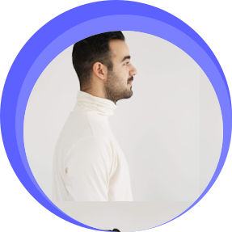

About Me
Hello, my name is Rodion Varlamov, and I'm a web design and digital media professional, based in Ottawa, ON, Canada. I enjoy creating websites along with other types of design projects. Since the year 2016, I have been working in the industry, improving my skills in web development, UI/UX design, and branding. My goal is innovative, user-friendly designs that will make businesses and individuals stand out online. Whether you want a website from scratch or a complete design redo, I'm here to bring your ideas to life with creativity and precision.